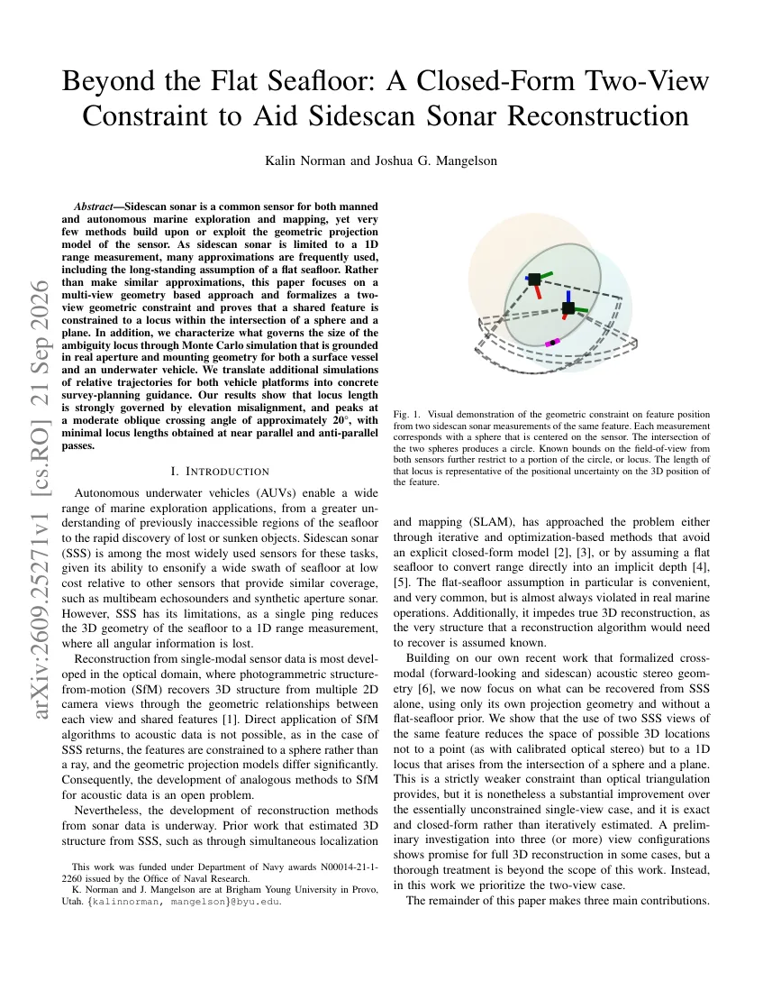
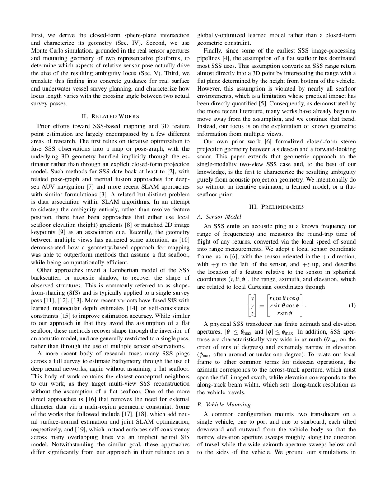

超越平坦海底：辅助侧扫声呐重建的闭式两视图约束
Beyond the Flat Seafloor: A Closed-Form Two-View Constraint to Aid Sidescan Sonar Reconstruction
把两次侧扫声呐测距写成“球面 ∩ 平面”的闭式约束，用真实孔径裁剪出可见弧长作为位置不确定性代理，并由此给出避免 10°–40° 斜交角的航迹规划规则。
crossing angle peak
apertures
pitch effect
作者、单位与技术谱系 · Research context
作者与单位
研究脉络
- norman2025cross（BYU 同组跨模态声呐立体几何）方法基座关系：把 cross-modal 声学立体几何收缩到仅用侧扫声呐的两视图[arXiv 官方 HTML v1]
- 平坦海底假设的经典侧扫处理方法上游关系：改由多视图几何约束替代测距-深度换算[arXiv 官方 HTML v1]
- 神经水深估计与 shape-from-shading 系列方法上游关系：同样追求非平坦海底重建，但换成闭式几何约束[arXiv 官方 HTML v1]
- 闭式两视图 locus 与survey 规划指南本篇推进关系：首次纯由声学投影几何刻画两视图位置不确定性[arXiv 官方 HTML v1]
合作网络
- Kalin Norman、Joshua G. Mangelson两位作者 → Brigham Young University关系：共同署名/作者单位[arXiv 官方 HTML v1]
- 本文仿真平台BlueBoat + 双 Omniscan 450 SS / 鱼雷形 AUV + EdgeTech 2205 → 孔径与测距参数表关系：公开硬件依赖[arXiv 官方 HTML v1]
- 本研究Office of Naval Research → 资助编号 N00014-21-1-2260关系：公开资助[arXiv 官方 HTML v1]
作者、单位、资助与平台参数来自论文 e-print 与官方 HTML；技术接续来自论文相关工作与合作者前作的引用关系，属于有来源的解读；未发现其他公开合作边。
方法本质拆解 · What actually changed
是不是训练出来的？
不是。全文没有学习模型或训练权重，locus 长度由球面-平面交线的解析解与真实传感器孔径裁剪直接给出；仿真只是蒙特卡洛采样统计。作者在致谢中说明 Claude 仅用于生成与改进绘图代码以及文字润色，研究问题、数学推导与解释结论由作者完成，此点属于原文明确声明。
输入带什么先验？
先验是已知的两视图相对位姿 (R,t)、两条测距 r₁、r₂ 以及各传感器的方位/俯仰孔径与最大测距；约束为球面 ‖p₁‖=r₁ 与平面 2uᵀp₁=C，作用于特征位置 p₁。方法刻意不使用平坦海底假设，也没有重力或外部尺度约束，但要求数据关联正确（同一特征被正确匹配）。
推理流程做了什么？
推理是解析计算加统计：先由两条测距与相对位姿求圆，再按两个传感器的视场裁剪出可见弧，最后用 Spearman 秩相关与交叉角扫描统计弧长分布。没有因子图、没有迭代优化、没有神经网络后端，也不存在训练/推理不一致的问题。
方法本质是什么？
本质是把“一维测距 + 已知相对位姿”翻译成精确的球面与平面交集，再用极窄的俯仰孔径把可见弧压成很短的片段，于是仰角错配成为位置不确定性主导因子。由此把车辆姿态几何直接转换为可执行的survey 规划规则：避免 10°–40° 斜交，优先近重复或近反向平行航迹，AUV 略微机头下俯。
两次侧扫声呐测距 + 已知相对位姿与视场孔径 + 球面-平面闭式交线和孔径裁剪 → 特征位置被限制在可度量的 1D 弧上，弧长即位置不确定性代理。

动机与问题Motivation
动机与问题
侧扫声呐一次 ping 把海底三维几何压缩成一维测距，角信息全部丢失，因此直接从光学 SfM 迁移算法不可行（特征是球面约束而非射线约束）。长期使用的平坦海底假设在真实作业中几乎总被违反，而且它把重建算法本应恢复的结构当成已知；已有替代方案或者依赖迭代优化隐式处理几何，或者用 shape-from-shading 反演单航迹声学模型，或者用全局优化的学习模型估计水深，缺少一个纯几何、闭式、可解析分析的约束。
方法Method
方法总览
给定两帧相对位姿 (R,t) 与两条测距 r₁、r₂，由 ‖p₁‖=r₁ 与 ‖Rp₁+t‖=r₂ 展开消元得到线性约束 2uᵀp₁=C，其中 u=Rᵀt、C=r₂²−r₁²−‖t‖²，即一个平面；它与球面 ‖p₁‖=r₁ 的联立给出一个圆。再考虑两传感器有限方位/俯仰孔径对该圆裁剪，得到实际可见弧，其长度被定义为 locus length，作为特征三维位置不确定性的代理量。
关键技术细节
把 p₁ 写成球坐标代入平面方程得到 2r₁(u_x cosθ₁cosφ₁+u_y sinθ₁cosφ₁+u_z sinφ₁)=C，是一个含两个未知角度的方程，欠约束恰好一个自由度。由于侧扫声呐俯仰孔径极窄（仿真用 Omniscan 450 SS 0.5°、EdgeTech 2205 0.27°，方位孔径 50°/130°，最大 150 m），可见弧只是整圆的一小段。仿真以两类真实平台为基准：BlueBoat 水面艇装双 Omniscan 450 SS（保持 roll=pitch=0），鱼雷形 AUV 装 EdgeTech 2205（roll=0，俯仰采样 ±45°，航迹实验收紧到 ±15°）；只关心相对构型，因此固定第一传感器采样特征在孔径/测距内的位置，再独立采样第二传感器的测距、孔径位置与姿态。

实验Experiments
实验设置
无噪声蒙特卡洛仿真。作者先做理想化无约束传感器对的全范围扫描，判定其中大量相对姿态在物理或作业上不可达（例如来自海底以下或船体侧翻），因此改为平台约束采样。分析方法有两类：一是对候选相对位姿量计算与 locus 长度的 Spearman 秩相关（原始长度与按平均测距归一化两种）；二是相对位姿两两组合的 median 热图（测距-测距、方位-方位、俯仰-俯仰、全局偏航-俯仰、方位-偏航）。最后用两台车辆各做两条直线航迹、交叉角从 0° 扫到 180° 的实验，把姿态空间结论翻译成survey 规划建议；全部假设数据关联正确且相对位姿已知。
实验数字与比较
敏感性排序：原始 locus 长度下测距与基线距离（baseline）主导 Spearman 排序，但按平均测距归一化后这两项迅速下降，仰角错配成为主导因子，局部方位角也有可辨的相关性（图 2）。热图结果：测距-测距组合中弧长随两车测距增大而增长；方位-方位组合在两侧局部方位都落在正 20°–40° 附近出现唯一热点；俯仰-俯仰呈以零点为中心的类二元高斯鼓包；包含第二车全局偏航的组合出现近似对称的双峰，弧长在偏航≈0° 与 ≈±180° 附近最小（图 3）。交叉角实验：弧长从重复航迹急剧上升，在约 20° 处出现明显峰值，随后单调下降，经 90° 垂交继续改善，到 180° 近反向平行达到最低；AUV 因俯仰孔径更窄且可在两航迹之间改变高度与俯仰，绝对弧长整体更短，但两台平台的交叉角趋势一致（图 4）。俯仰实验：在最差交叉角带内，同等幅度的机头上仰比机头下俯使中位弧长约增加 40%，作业深度未发现可比效果。
消融/失败边界
论文没有模块式消融，而是用设计对照暴露结论的依赖条件：如果去掉视场裁剪（使用未裁剪的完整圆），重复航迹会给出极大的模糊圆，与光学三角化的直觉一致；正是因为侧扫声呐俯仰孔径极窄，裁剪后的可见弧在近重复航迹下反而很短，所以“近重复航迹可用”这一结论依赖窄俯仰孔径这一前提。另一个对照是理想化全范围采样与平台约束采样之间的取舍：前者包含大量不可行姿态，会使排序失真，作者因此改用平台约束仿真。失败边界还包括：分析是无噪声的（未把测距噪声与相对位姿误差纳入），假设数据关联正确且相对位姿已知，只给出两视图结论，且只展示端口侧结果（舷侧由对称性推得）。
局限与迁移Limitations & Transfer
局限与待核验
作者明确列出：三视图及以上在什么条件下能把 locus 收缩成一个完整三维点，属于未来工作；把当前无噪声几何分析扩展为形式化的量测不确定度模型、以及用姿态空间敏感性直接做自动survey 路径规划，也都留待后续。待核验：图中弧长峰值、Spearman 系数与中位/IQR 的具体数值需要逐图核对（正文只以文字形式给出趋势与 20° 峰值、40% 俯仰差异这两个相对量）；仿真代码与数据未随论文公开；真实海试或与其他声呐（多波束、合成孔径声呐）的交叉验证未做，因此给出的航迹建议目前是几何下界而非端到端精度保证。
与你研究路线的关系
可迁移的是把传感器投影模型写成可证明的闭式约束这一方法论：用球面-平面交线替代体素或学习式重建，把观测几何直接转成不确定性代理量，与可靠状态估计中“用可观测性/退化指标做观测门控”的思路同源。下一步实验：在该闭式约束中注入测距噪声与相对位姿协方差，得到 locus 的后验分布而不是确定弧长；再把该约束作为因子接到 AUV 的迭代式 SLAM 前端，比较数据关联质量与定位误差，检验“近重复或近反向平行航迹”的建议在带噪声与姿态漂移时是否仍成立。